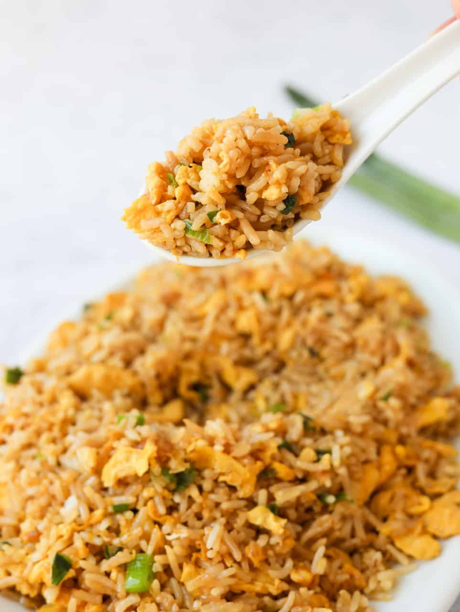

Egg Fried Rice

Description
Egg Fried Rice is a simple and quick recipe which
uses leftover rice to make a delicous dish.
Ingredients
- Leftover cold rice, ideally jasmine rice
- Green Onions or Spring Onions
- Regular Soy Sauce
- Toasted Sesame Oil
- Beaten Eggs
- Neutral Oil
Steps
- Heat oil.
- Fry beaten eggs.
- Toss in rice.
- Toss in green onions.
- Add seasoning.
- Serve.
Back to Home